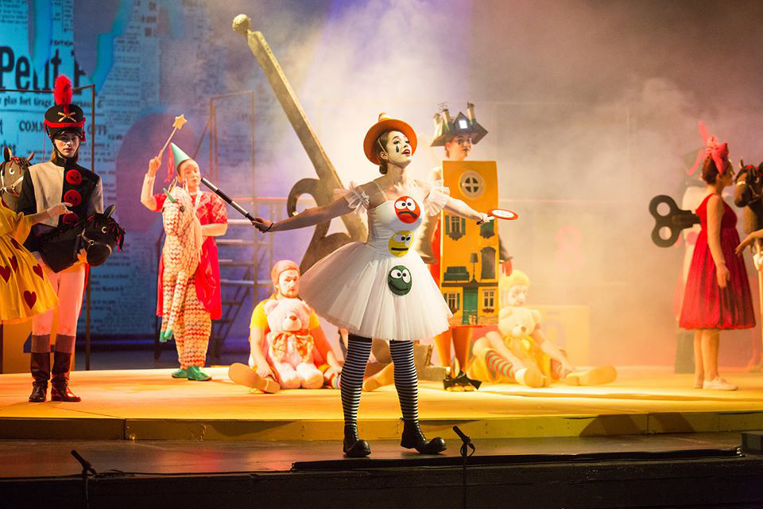

<!DOCTYPE html><html><head><meta charset="UTF-8"><meta name="viewport" content="width=device-width, initial-scale=1.0"><meta http-equiv="X-UA-Compatible" content="ie=edge"><link rel="stylesheet" href="scss.19110e6e.css"></head></html><body><div class="wrap"><div class="wrap__content"><div class="container"><div class="row"><div class="col-nav"><header class="header"><a class="logo header__logo" href="/" title="lifeticket"></a><div class="lng"><a class="lng__link" href="#"></a><a class="lng__link" href="#"></a></div></header><div class="search-form"><div class="card search-card"><label class="form-label">Поиск</label><div class="form-input-group"><input class="form-control" type="text" placeholder="Введите название"><button class="form-input-group-btn"></button></div><label class="form-label">Дата</label><div class="form-input-group"><input class="form-control" type="text" placeholder="Поиск событий" value="15.03.20"><button class="form-input-group-btn"></button></div><div class="form-radio"><input class="form-control-radio" id="radio1" type="radio" name="type" value="Опера" checked><label class="form-radio-label" for="radio1">Опера</label></div><div class="form-radio"><input class="form-control-radio" id="radio2" type="radio" name="type" value="Балет"><label class="form-radio-label" for="radio2">Балет</label></div></div></div><div class="card shopcart-card"><div class="shopcart-card__title">Корзина</div><ol class="shopcart-card-list"><li class="shopcart-card-list__item">12.03.2020 <br>Лебединое озеро, Мариинский театр<br><button class="shopcart-card-list__brt-remove">Удалить</button></li><li class="shopcart-card-list__item">12.03.2020 <br>Лебединое озеро, Мариинский театр<br><button class="shopcart-card-list__brt-remove">Удалить</button></li><li class="shopcart-card-list__item">12.03.2020 <br>Лебединое озеро, Мариинский театр<br><button class="shopcart-card-list__brt-remove">Удалить</button></li></ol><button class="btn shopcart-card-btn">Оформить</button></div></div><div class="col-content"><main class="main"><div class="events-block"><div class="events-block__title-wrap"><div class="events-block__title">Март</div></div><div class="events-list"><div class="events-list__item"><div class="event-card"><div class="event-card__img-wrap"><span class="event-card__date">15 Марта</span></div><div class="event-card__content-wrap"><div class="event-card__content"><div class="event-card__head"><h2 class="event-card__title">Лебединое озеро Лебединое озеро Лебединое озеро Лебединое озеро</h2><span class="event-card__sub-title"> Мариинский театр, 15 марта 13:00</span></div><div class="event-card__ticket"><span class="event-card__price">Стоимость билетов: от 5000 ₽</span><a class="event-card__ticket-btn btn" href="#">Выбрать места</a></div><div class="event-card__dscr"> «Лебединое озеро» — балет Петра Ильича Чайковского в четырёх актах. Либретто Владимира Бегичева[1] и, возможно, Василия Гельцера с дополнениями самого композитора.</div></div></div></div></div><div class="events-list__item"><div class="event-card"><div class="event-card__img-wrap"><span class="event-card__date">15 Марта</span></div><div class="event-card__content-wrap"><div class="event-card__content"><div class="event-card__head"><h2 class="event-card__title">Лебединое озеро</h2><span class="event-card__sub-title"> Мариинский театр, 15 марта 13:00</span></div><div class="event-card__ticket"><span class="event-card__price">Стоимость билетов: от 5000 ₽</span><a class="event-card__ticket-btn btn" href="#">Выбрать места</a></div><div class="event-card__dscr"> «Лебединое озеро» — балет Петра Ильича Чайковского в четырёх актах. Либретто Владимира Бегичева[1] и, возможно, Василия Гельцера с дополнениями самого композитора.</div></div></div></div></div><div class="events-list__item"><div class="event-card"><div class="event-card__img-wrap"><span class="event-card__date">15 Марта</span></div><div class="event-card__content-wrap"><div class="event-card__content"><div class="event-card__head"><h2 class="event-card__title">Лебединое озеро</h2><span class="event-card__sub-title"> Мариинский театр, 15 марта 13:00</span></div><div class="event-card__ticket"><span class="event-card__price">Стоимость билетов: от 5000 ₽</span><a class="event-card__ticket-btn btn" href="#">Выбрать места</a></div><div class="event-card__dscr"> «Лебединое озеро» — балет Петра Ильича Чайковского в четырёх актах. Либретто Владимира Бегичева[1] и, возможно, Василия Гельцера с дополнениями самого композитора.</div></div></div></div></div></div></div><div class="events-block"><div class="events-block__title-wrap"><div class="events-block__title">Апрель</div></div><div class="events-list"><div class="events-list__item"><div class="event-card"><div class="event-card__img-wrap"><span class="event-card__date">15 Марта</span></div><div class="event-card__content-wrap"><div class="event-card__content"><div class="event-card__head"><h2 class="event-card__title">Лебединое озеро</h2><span class="event-card__sub-title"> Мариинский театр, 15 марта 13:00</span></div><div class="event-card__ticket"><span class="event-card__price">Стоимость билетов: от 5000 ₽</span><a class="event-card__ticket-btn btn" href="#">Выбрать места</a></div><div class="event-card__dscr"> «Лебединое озеро» — балет Петра Ильича Чайковского в четырёх актах. Либретто Владимира Бегичева[1] и, возможно, Василия Гельцера с дополнениями самого композитора.</div></div></div></div></div><div class="events-list__item"><div class="event-card"><div class="event-card__img-wrap"><span class="event-card__date">15 Марта</span></div><div class="event-card__content-wrap"><div class="event-card__content"><div class="event-card__head"><h2 class="event-card__title">Лебединое озеро</h2><span class="event-card__sub-title"> Мариинский театр, 15 марта 13:00</span></div><div class="event-card__ticket"><span class="event-card__price">Стоимость билетов: от 5000 ₽</span><a class="event-card__ticket-btn btn" href="#">Выбрать места</a></div><div class="event-card__dscr"> «Лебединое озеро» — балет Петра Ильича Чайковского в четырёх актах. Либретто Владимира Бегичева[1] и, возможно, Василия Гельцера с дополнениями самого композитора.</div></div></div></div></div><div class="events-list__item"><div class="event-card"><div class="event-card__img-wrap"><span class="event-card__date">15 Марта</span></div><div class="event-card__content-wrap"><div class="event-card__content"><div class="event-card__head"><h2 class="event-card__title">Лебединое озеро</h2><span class="event-card__sub-title"> Мариинский театр, 15 марта 13:00</span></div><div class="event-card__ticket"><span class="event-card__price">Стоимость билетов: от 5000 ₽</span><a class="event-card__ticket-btn btn" href="#">Выбрать места</a></div><div class="event-card__dscr"> «Лебединое озеро» — балет Петра Ильича Чайковского в четырёх актах. Либретто Владимира Бегичева[1] и, возможно, Василия Гельцера с дополнениями самого композитора.</div></div></div></div></div></div></div></main></div></div></div></div><footer class="footer"><div class="container"><div class="row"><div class="footer-col-logo"><a class="logo footer__logo" href="/" title="lifeticket"></a><span class="footer__cr"> Lifeticket © 2020</span></div><div class="footer-col-content"><ul class="menu-contact footer__menu-contact"><li class="menu-contact__item"><a class="menu-contact__link" href="tel:89313642257"><span class="menu-contact__link-icon-wrap"></span><span class="menu-contact__link-text">8 (931) 364-22-57</span></a></li><li class="menu-contact__item"><a class="menu-contact__link" href="mailto:info@lifeticket.ru"><span class="menu-contact__link-icon-wrap"></span><span class="menu-contact__link-text">info@lifeticket.ru</span></a></li></ul><ul class="menu footer__menu"><li class="menu__item"><a class="menu__link" href="#">Лебединое озеро </a></li><li class="menu__item"><a class="menu__link" href="#">Щелкунчик</a></li><li class="menu__item"><a class="menu__link" href="#">Для групп</a></li><li class="menu__item"><a class="menu__link" href="#">Расписание балетов</a></li></ul><p class="footer__dscr">Lifeticket – билеты на классические постановки Санкт-Петербурга: Лебединое озеро, Щелкунчик, Золушка, Спящая красавица. Особые условия коммерческого сотрудничества для гидов, гостиниц, туристических фирм.</p></div></div></div></footer></div><script src="app.cbd165fb.js"></script></body>